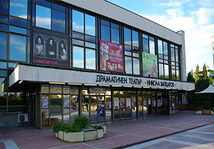
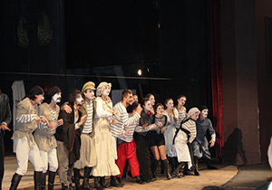

Драматичен театър „Н.ВАПЦАРОВ”- Благоевград
 Драматичен театър „Н.ВАПЦАРОВ”- Благоевград е репертоарен театър. Създаден е през 1919 година, като градски театър, базиран в сградата на читалище “Съгласие”. Статут на държавен институт с постоянна актьорска трупа, щатни режисьори, сценографи и драматург получава през 1948 година . Много от популярните актьорски имена в българския театър са започнали творческия си път или са се реализирали успешно на благоевградската сцена. Благоевградският театър е носител на множество престижни награди от национални прегледи и фестивали – за режисура, актьорско майсторство, сценография и музика. През 1996 г. постановката “Майстори” от Р. Стоянов (реж. Бойко Богданов) получи наградата за режисура на Съюза на артистите в България и наградата “Дионисий” – Смолян. През 2001 г. театърът бе удостоен с четири номинации “АСКЕЕР” – за режисура, сценография, костюми и за най-добро представление; наградата “АСКЕЕР” за режисура получиха Петър Пейков и Албена Георгиева (за спектакъла “Пиеса № 27” от Алексей Слаповски). През 2002 г. “АСКЕЕР” получи композиторката Петя Диманова за музиката към спектакъла “Кървава сватба” от Ф. Г. Лорка, реж. Крум Филипов. През 2003 г. наградата “АСКЕЕР” за режисура бе дадена на Асен Шопов за спектакъла “В полите на Витоша” от П. К. Яворов”, а номинация за изгряваща звезда получи младата актриса Силвана Пишимарова за ролята на Мила в същия спектакъл. С награда “АСКЕЕР” за поддържаща мъжка роля бе удостоен актьорът Петър Кьосев за ролята на Ханс Салама в “Каролина Нойбер” от Небойша Ромчевич с режисьор Крикор Азарян.